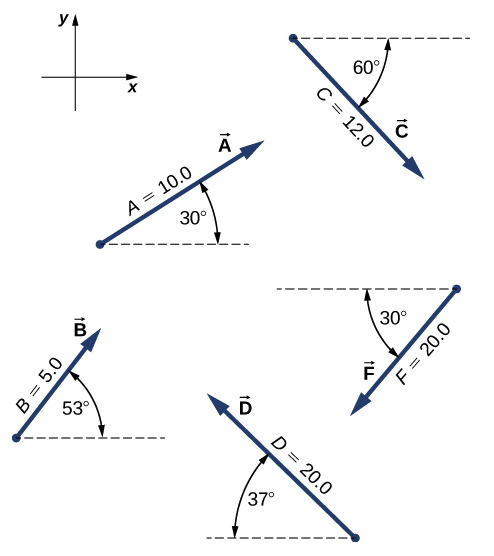
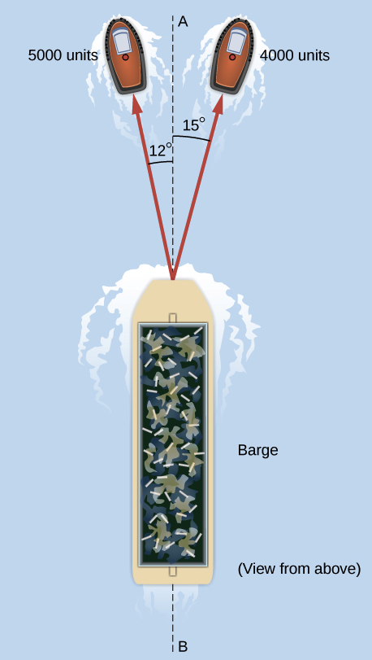

C1.10 Problems#
Problem C1.1
An adventurous dog strays from home, runs three blocks east, two blocks north, one block east, one block north, and two blocks west. Assuming that each block is about 100 m, how far from home and in what direction is the dog? Use a graphical method.
This problem is a slightly modified version from OpenStax. Access for free
# DIY Cell
Problem C1.2
Assuming the +x-axis is horizontal and points to the right, resolve the vectors given in the following figure to their scalar components and express them in vector component form.

This problem is a slightly modified version from OpenStax. Access for free
# DIY Cell
Problem C1.3
A sledge is being pulled by two horses on a flat terrain. The net force on the sledge can be expressed in the Cartesian coordinate system as vector \(\vec{F} = (-2980.0~\hat{i} + 8200.0~\hat{j})\) N, where \(\hat{i}\) and \(\hat{j}\) denote directions to the east and north, respectively. Find the magnitude and direction of the pull.
This problem is a slightly modified version from OpenStax. Access for free
# DIY Cell
Problem C1.4
Given two displacement vectors \(\vec{A} = (3.00~\hat{i} - 4.00~\hat{j} + 4.00~\hat{k})\) m and \(\vec{B} = (2.00~\hat{i} + 3.00~\hat{j} - 7.00~\hat{k})\) m, find the displacements and their magnitudes for
\(\vec{C} = \vec{A} + \vec{B}\)
\(\vec{D} = 2\vec{A} - \vec{B}\)
This problem is a slightly modified version from OpenStax. Access for free
# DIY Cell
Problem C1.5
A barge is pulled by the two tugboats shown in the following figure. One tugboat pulls on the barge with a force of magnitude \(4000.0\) units of force at \(15^\circ\) above the line AB (see the figure) and the other tugboat pulls on the barge with a force of magnitude \(5000.0\) units of force at \(12^\circ\) below the line AB.
Resolve the pulling forces to their scalar components and find the components of the resultant force pulling on the barge.
What is the magnitude of the resultant pull?
What is its direction relative to the line AB?

This problem is a slightly modified version from OpenStax. Access for free
# DIY Cell
Problem C1.6
Assuming the +x-axis is horizontal to the right for the vectors in the following figure, find the following scalar products
\(\vec{A}\cdot\vec{C}\)
\(\vec{A}\cdot\vec{F}\)
\(\vec{D}\cdot\vec{C}\)
\(\vec{A}\cdot(\vec{F} + 2\vec{C})\)
\(\hat{i}\cdot\vec{B}\)
\(\hat{j}\cdot\vec{B}\)
\((3\hat{i} - \hat{j})\cdot\vec{B}\)
\(\vec{B}\cdot\vec{B}\)
This problem is a slightly modified version from OpenStax. Access for free
# DIY Cell
Problem C1.7
Find the angle between vectors for
\(\vec{D} = (-3.0~\hat{i} - 4.0~\hat{j})\) m and \(\vec{A} = (-3.0~\hat{i} + 4.0~\hat{j})\) m.
\(\vec{C} = (2.0~\hat{i} - 4.0~\hat{j} + \hat{k})\) m and \(\vec{B} = (-2.0~\hat{i} + 3.0~\hat{j} + 2.0~\hat{k})\) m.
This problem is a slightly modified version from OpenStax. Access for free
# DIY Cell
Problem C1.8
Find the angles that vector \(\vec{D} = (2.0~\hat{i} - 4.0~\hat{j} + \hat{k})\) m makes with the x-, y-, and z- axes.
This problem is a slightly modified version from OpenStax. Access for free
# DIY Cell